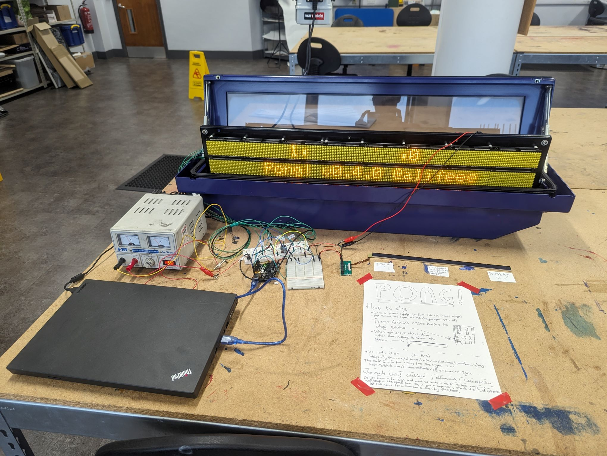
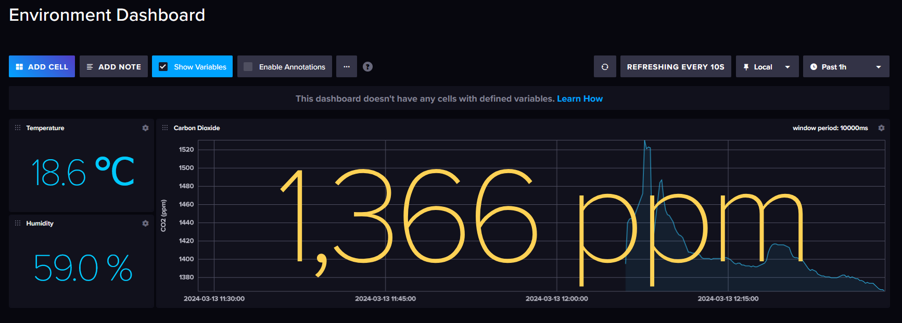

last edited: 2025-02-19 10:45:05 +0000
To me, an "article" is a "blog post" on a website that is not a personal website. I have lots of them bookmarked; see /bookmarks. Here, I provide a couple of lists of loosely related articles. Individual ones remain on /bookmarks (things should not be categorised until you have enough per category).
- "How frictionless should your life be?"
-
-
-
-
personally, I align more with the latter two. While all the modern convenience is good for some people and everyone on some days, I think it's overall bad to rely on.
- "why open data?"
-
-
-
- "how do I start a blog"
- see the many links on How to start blogging - alifeee, 2024-01-17, infrequently updated
- some thoughts on LLMs (Large Language Models) and AI (Artificial Intelligence)
- TheBullshitMachines.com is a very readable and understandable set of pages about the state of LLMs and generative AI. I'm sure you can guess their overall perspective, and I'm sure you can guess that mine is not far off.
- Pluralistic has many posts tagged LLM that are worth reading, notably about the chances of general intelligence coming from LLMs, LLMs being used for botspam, and copyright considerations.
last edited: 2025-02-24 12:43:01 +0000
I'm a fan of technologies. I'm not a fan of "big tech".
In that vein, here are some resources that point out privacy-respecting alternatives to Google Drive, Microsoft Office, Zoom, Facebook, Google Docs, Adobe, Discord, Meetup, Patreon, Slack, Twitter, Google Chrome etc., etc., etc.
I'm not perfect. I still use several services from "big tech".
- https://switching.software/, my favourite website, that provides a beautiful list of alternatives to common websites and apps
- https://pluja.github.io/awesome-privacy/, a huge list of privacy-respecting services
- https://cryptpad.fr/ and https://framasoft.org/, two companies who make "shareable Cloud documents" like spreadsheets, documents, polls, and presentations.
- https://etherpump.vvvvvvaria.org/p/digital-solidarity-networks.raw.html, a wonderfully formatted, "shared list of tools, practices, and readings for digital solidarity, conviviality and togetherness"
last edited: 2025-02-04 18:19:07 +0000
You can find (in theory) all the books I've (recently) read, as well as the book I am (hopefully) currently reading on my RamblingReaders account. You can follow it on Mastodon !
- Invisible Women

- ever wondered if women are intrinsically at a disadvantage? I hope so. read this book and you'll learn so much more about male-bodied crash test dummies, the benefits-for-all of clearing the snow on footpaths before roads, the tyranny of bus tickets, and way more. it's good. you should read it.
last edited: 2025-02-24 12:30:07 +0000
I'm not that involved in cooperatives, but I like the idea. Here are several Internet resources.
last edited: 2025-01-01 21:19:57 +0100
- The Contestant
- I watched this at the first Sheffield DocFest I volunteered at, it's about a Japanese man who spends more than a year alone in a room as part of a Truman-esque gameshow. Supposedly, it's the source of the eggplant emoji... metaphor. on wikipedia
- Fire of Love
- This is a documentary about two madly in-love vulcanologists. It's really, really, cute. Strangely, it's also a twin film as Werner Herzog released "The Fire Within: A Requiem for Katia and Maurice Krafft" at the same time. wikipedia
- The Pirate Bay: AFK
- this is a doc about The Pirate Bay. I love it because the "hacker stereotype" comes through amazingly, with the Swedes acting in such a blasé way in court. wikipedia. you can watch it for free in full on YouTube! (or watch the trailer first)
last edited: 2025-01-10 16:06:29 +0200
Sometimes, I find a really specific forum post which is so relatable but so niche at the same time. I thought a collection of them could be nice.
- STOP PUTTING MY MAIL IN JUNK! by suspense author
- I want all the emails that I get sent to go to my inbox. With Microsoft's, this is simply not possible. The advice is always "add people to your contacts/safe senders list", but the emails I want to see are those from people who's emails I don't yet know, as they are new emails. It's super annoying. Anyway, it's nice to find someone who also thinks so.
last edited:
This is very much a favourite "thing", in that it is a favourite "concept".
I enjoy hardware hacking a bunch, mainly meaning programming microcontrollers. All my screwing around so far has been with C or C++ (or the "Arduino" language, which is basically just C).
I've:
- screwed around with Arduino and hardware
- https://github.com/alifeee/arduino-sketches
- https://github.com/alifeee/neonode-touch
- screwed around with web requests
- https://github.com/alifeee/discord-webhooks-from-esp8266
- screwed around with old transport signs
- https://blog.alifeee.co.uk/hull-bus-sign/
- https://github.com/ConnectedHumber/Bus-Terminal-Signs
- https://github.com/sheffieldhackspace/train-signs
- https://github.com/alifeee/openbenches-train-sign
- 
- screwed around with CO2 monitors
- https://github.com/alifeee/CO2-monitoring
- 
- both!
- https://github.com/sheffieldhackspace/co2-train-sign

last edited: 2025-01-01 20:25:16 +0100

- I just think it's neat. The source is https://wiki.xxiivv.com/media/refs/borders.png
last edited: 2025-02-04 18:19:07 +0000
I don't watch many series, because I don't like it when they leave an avaricial cliffhanger after every season (Stranger Things… Snowpiercer… when do they end? never).
What I do like is miniseries, which wrap up their story in 6-to-10 episodes of a single season. Probably just because they're like a massive film.
- This is a show about lots of men who freeze to death. It's a retelling of the mystery of "Franklin's Lost Expedition", an Arctic Exploration to find the Northwest Passage, on two boats: HMS Erebus and HMS Terror, in 1845-1848. It's 10 episodes, and it really puts you in the environment of the characters and provides a complete, satisfying story. I watched it once via a free trial to an online streaming service, and a second time via downloading it.
- I will consume any media related to 80 Days Around the World, which probably started because of the 80 Days video game (on wikipedia). And this one has David Tennant! It's 8 episodes, a bit cheesy at times, and free to watch on BBC iPlayer.
- Devs is a show about some people who get invited to a secret division of a FAANG-like mega-corporation and then shenanigans arise. It's very good. I watched it on BBC iPlayer.
last edited: 2025-02-10 10:32:13 +0000
- Polytopia

- Polytopia, or The Battle of Polytopia is a mobile (and PC!) game that's like a super-simple version of Civilisation or any of those games that take a really long time. It's free to play alone or you have to buy a tribe (for £0.89) to play multiplayer. You can play it on Android or Apple or PC or probably a bunch of other places.
- 80 Days
- 80 Days is a narrative adventure through a neo-steam-punk Victorian world, effectively a very fun choose-your-own-adventure built around the story of Jules' Verne's novel. It's well worth £4.99 on Android or elsewhere. I will consume all 80 Days content, and this is my favourite of it.
- Slice & Dice

- Slice & Dice is an incredibly satisfying roguelite where your 5 heroes roll and reroll dice to determine their abilities. Naturally, you end up customising the dice, creating a build (trying not to make infinite reroll for the umpteenth time), and testing your luck. It's got a nice amount of luck vs skill which makes you feel like you're making decisions, and it's very slick.